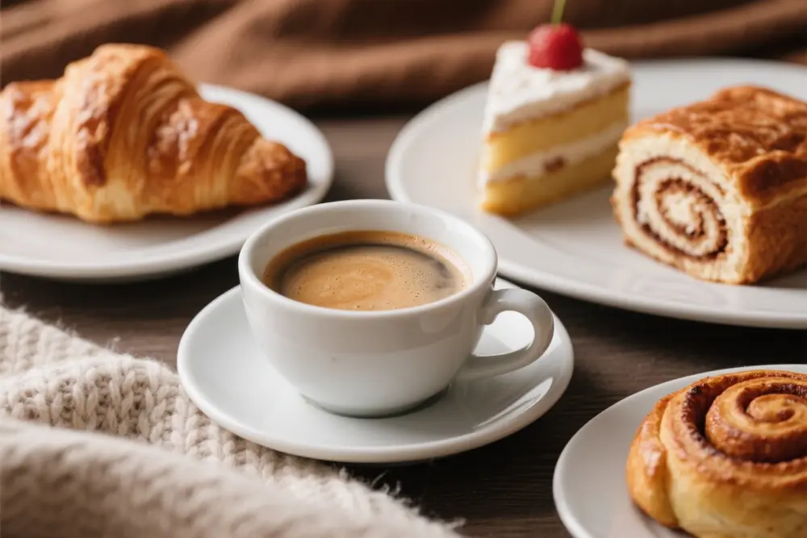

About Us
Founded in , CoffeeScript Café was brewed from a passion for clarity, consistency, and customer-focused service. Just like clean code, our approach ensures every cup is reliable, expressive, and crafted with care. We aim to provide a welcoming space where visitors can debug their day, recharge their minds, and enjoy a seamless coffee experience.
From our carefully sourced beans to our thoughtfully designed space, every detail at CoffeeScript Café reflects our commitment to both craft and community. Whether you're pairing a cappuccino with code, sketching ideas over a latte, or simply savoring a quiet moment, we strive to make each visit intuitive, inspiring, and refreshingly simple—just like the best scripts.